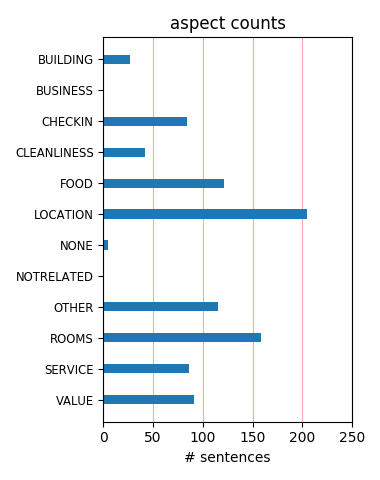
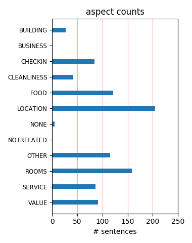

There were supposed to be a safe in every room. I guess we got the one without, so we had to leave all our "valuables" in the front desk safe, where we only could access it at certain times. Accept from that the hotel was average. Short walk to leidseplein.
we booked into this hotel for 2 nights, our 1st room was not ready, had stains in the bed from the previous nights activity's! stinking and full of rubbish, when we informed staff they were rude and condescending. basic breakfast. i would not recommend this hotel- to anybody!!
This hotel has a perfect location, just around the corner from leidse square, which has lots of bars and night life. I really liked the staff and found them very friendly and helpful, Beware of bag stealers in the bars though, 2 of our gang of 10 had handbags stolen from their chairs...
I had read all the reviews before I left on vacation about this hotel and most were favorable. I totally agree that it's a great place to stay but make sure you stay on the upper floors. I stayed on the first floor and it was quite noisy from all the street noise. Especially if you're a light sleeper like me.
Well located close to museum and Leidse Plein, however suited more to young backpackers. The room is comfortable but quality of finishes is poor. Breakfast buffet is more canteen style and public areas more like a youth hostel or student halls of residnce, That said, on a budget it is OK, but the price reflects the quailty
Nothing to complain about here - excellent location in a quiet side street near the Leidseplein (with some great local bars and restaurants nearby), clean, functional rooms, good simple breakfasts and friendly service. Not exactly 5-star luxury but for the price (we managed to get a 3-nights-for-2 offer) it can hardly be faulted.
we stayed here for four days from 9th December to the 12th and had a great time. The hotel is close to the 297 bus stop to and from Schippol airport €4 each way. The staff were friendly and rooms cleaned every day. If you get a chance you must have a walk through Vondel park, i would love to see it in summer and will do if we get a chance.
The location is perfect, a ten-minute walk from the museums, and a five-minute walk from a great shopping street. The staff was very friendly and helpful. The room was fine. Free wifi. Electric kettle with tea and coffee. The buffet breakfast was good and cheap if you reserved the night before (7.5 euros). This hotel is very good value for money.
We booked a superior room thinking it would be the best. Wrong! There were no tea or coffee making facilities in the rooms and the hotel generally had a gloomy atmosphere. The staff were a little helpful but didn't go out of their way. The room was cold and dank. I was more than dissapointed for the money we paid and would not reccomend it to anyone.
As far as hotels in Amsterdam go, it is a great value. The hotel is clean, provides comfortable accommodations, and is in a great location to get to museums. They provide breakfast and the desk was helpful in guiding us when needed. Their business services were also accommodating. I really have nothing bad to say - it was clean, cheap, and a great location.
Great location. Walking distance from Vondel Park, Van Gogh Museum, etc. Anne Frank house about 20min walk away. Hotel room smaller but is very clean and everything you need is in it. Buffet included and it includes boiled and scrambled eggs, bacon, croissants, lunch meat, cheeses and cereals. Hotel staff was very nice and helpful. Price is decent for what you get.
We stayed for 3 nights in March 06. It was convenient (trams 1,2 or 5 running frequently from Centraal Station) and near to the main museums. Our room was small but the bathroom was fine and the buffet breakfast offered a good choice. We found the hotel clean and quiet and found staff friendly. I recommend the nearby Cafe Suisse as a lively, characterful and reasonably priced place to eat.
Centrally located Hotel Close to the City Center in Amsterdam, the paradiso concert Hall, the Vondel Park and Major Shopping streets. Friendly Staff, stylish inferior. Well placed for Shopping stroll down the exklusive Street with Lots of Shops and Bars where the Hotel is located, Howards Vondel Park for some Major Shopping. Also very Close to Major Museums. Would definately stay there again next time.
Considering the price this is certainly worth the money. Was looking for something in the City centre but was finding the prices sky high but this place is a very happy compromise. The biggest plus is the location, a really good spot to explore the city but not so central that it's noisy or congested. The rooms need a bit if re-decorating but all things considered this hotel is good. Would come back here.
Next to Vondelpark and a short walk to bars, restaurants and Heineken Brewery. Lovely setting on a lovely avenue. Room was clean, staff were welcoming, breakfast room pleasant. Could not really fault this hotel. Would definitely stay again if I ever visited again but for me Amsterdam has priced itself right out of the market. Everywhere so expensive. One bar was 4.65 euros for half lager or 5.65 for a pint.
This hotel was in a fantastic location with great access to trams and buses. It was a short walk to the main shopping and restaurant street and the Winter Festival that was being held! It was fantastic. Our room was huge by most European standards, we were in a quad room on the lower floor with a massive window and lots of space. The staff were nice and the breakfast was good. Would definitely stay there again!
Except the service, I think overall the hotel is not as good as I expected. First of all, the room is a little bit dark. The light is dim. Secondly, the shower area is so SMALL, even for an asian girl like me ( I got only 95pds and you can imagine how slim I am), I think it is not comfortable to take ahower there. The location is okay, but if i went to Holland again, I would prefer staying near the station or Dam area!
We were pleasantly surprised at our experience with this quaint hotel which is located in a quiet residential area. An airport shuttle dropped us off right in front so it was very convenient. The staff at the desk were very amiable and our room was spacious. The hotel is walking distance to eateries and a convenience store. Breakfast was good and we felt that what we paid was well worth it. We would definitely stay there again!
Although we had booked a superior double room, it was quite small and dark. The gable at one end of the room meant we had to keep ducking to avoid banging our heads on the low ceiling. There was no hot water on the one day of our stay. The first breakfast we had there was totally disorganised-no clean plates and tables not cleared although it was much better the second day. I don't think I would stay there again, although the location is quite good.
Having read the reviews on here after booking we were a bit panicked and didn't know what to expect, but the hotel is great! We checked in at midnight on a Friday, the room was clean and quiet, the hotel location is ideal, and the staff are friendly and helpful. Breakfast is ok, had better, had worse. We booked through Hotel Connect, the whole system ran smoothly from start to finish and I'd recommend them too. We paid about £180 for 3 nights, bargain.
Everything was great, the room, the breakfast, the location, the staff. It was the perfect place for my daughter and I to stay 3 nights in Amsterdam. Very easy to get to from Central Station. Close to all the action in Leidesplein Square, but on a quite street. Easy walk to trams and buses. The room was very clean and modern. Spacious compared to our room in Paris! The breakfast was really nice to start each day. Recommend Mike's countryside bike tour!! Close to Vondel park.
Travelled to Amsterdam with my boyfriend and both our mothers. Booked a superior twin and double, the twin was superb however, double was very small, this was the olny fault to our fabulous stay. On arrival the staff were very helpful and friendly and we were made to feel welcome. The location could not be better walking distance from Liedse Plane and olny a short tram ride form Central. Booked this hotel in advance and got a reasonable price. Will be back to the hotel hoepfully very soon.
This hotel is in a great location, away from the general noise of Amsterdam at night, but just a few minutes walk away from one of the citys main squares. The staff were great and answered any questions we asked, the room was spotless and cleaned daily. The breakfast was good enough to keep us going till dinnertime. For the price we paid for the whole package I was expecting the hotel to be a bit naff, but it was perfect to use as a base to see the city. All in all great value and a great location. .
This hotel is in a great location, 5 minute walk to the busy Leisdseplien area. It is also just a 10 min walk to the Heineken Brewery. I felt very safe in the area of the hotel as apposed the the Centrum Area that can be a little seedy at night. Room and Hotel are very clean. Staff were welcoming and friendly. My double room was small for American standards but not for European standards. If you are traveling solo, opt for the Double room for a few euros more. Breakfast was ok, breads, breakfast meats, cereal, cheese, etc...
The staff were friendly & efficient, the room - p'haps a tad too snuggly - was comfortable, the bed superb & the shower near perfect. The hotel is a stone's throw from tram, bus & taxi stops (bus takes 1/2 an hour from hotel to airport) & a 3 min walk to the lively Leidseplein area. Due to it's location - one very small block back from the main roads- the hotel is very quiet & relaxed. An ideal spot to rest your head & body after a night out in town. We will definitely use this hotel again. Thank you for making our stay so special.
I had family over in Amsterdam, I live there myself, visitors I always put up at an hotel. This place has the best location you can wish for. A few minutes walk to the centre of town (canals) in a really nice neighbourhood. Breakfast was included and quite tasty. Rooms were clean and except for the lack of a coffee/tea maker they have everything you need. Staff were very pleasant and give you a really relaxed en welcome feeling. The bar is a nice place to have e few drinks before hitting the town. Best place for e reasonabel price.
Absolutely horrible! We arrived to a tiny room w two twin beds pushed together instead of the real double bed we had rented. After waiting a long time and getting the song and dance about getting the room, we received the new room. Paper thin walls and doors. School of children slamming doors(enough to make mine rattle!!!!)! Didn't sleep that night, hotel told us they'd refund us for the now-cancelled second night and would offer us their breakfast if we stayed (seriously.). Then there was trouble getting the refund. Do not stay here.
As previous review - no hot water for a complete day and management did not see this as a problem. We also wandered what the superior room was superior to - glad we did not stay in the normal room! During our stay at the hotel my dog was staying in far better conditions. Location was good though. If it was 10 euros a night i would say it was fair value. Would not stay there again unless I was paid to. A good, customer focussed manager could easily make this a good hotel to stay in. Unfortunately that is not what they have got. Very very poor.
We booked a couple of days in Amsterdam at short notice, and went for Best Western Leidse Square Hotel because it had rooms available at a reasonable price. The room was good, and clean, and was quiet too (something you don't always get from hotels closer to the centre). Our only concern is that you have to hand your room key back every time you leave, and when you return you simply give your room number. As far as I can see there's nothing stopping anyone from walking in and asking for the key to a room that isn't theirs, given that no checks were made.
From reading other reviews we weren't expecting anything special... but turned out to be better than expected. Rooms were pleasant but basic, would've liked a kettle and we had a room with no bath so were a little disappointed there. However the room was very clean, spacious and the hotel was quiet. Location was perfect- close to the center yet tucked away in a quiet street so no noise. Breakfast was basic but ok, staff spoke good english and were relatively friendly. I would recommend this hotel to anyone going to Amsterdam but don't expect anything luxury!
I booked two rooms at the Leidse Square. The location was great. We walked everywhere. The rooms we had were extremely small. I understand rooms in Europe are small, however, I've been to a number of places in Europe and these were the smallest rooms we've had anywhere. You could barely walk around the bed to the bathroom. Also, the closet couldn't fully open because it was blocked by the bed. Also, when we arrived, they input the wrong rates for us. They were higher than what I confirmed on line. That was an extra hassle that we had to work through on check in.
The hotel is in a good location at the end of Vondel Park nearest the centre. A few minutes to the museums, about twenty five minutes to Dam Square (half an hour to the station?). For something so near the centre it was wonderfully quiet - we were able to keep the window open all night. (We had a room at the back, though). Not huge amounts of space in the room, but quite enough. The decor is past its best, but fine. The bathroom was old but more than adequate - with a bath. The breakfast very good value. And above all, pleasant, professional staff. We intend to go back.
We had a brilliant time. There was 14 of us and the hotel was great for what we wanted. Very friendly at reception and especially in the 'cosy' hotel bar. Think his name was Ziya, so helpful and very funny. The rooms were better than expected and had a great nights sleep. Located in a very quiet area but only 3 minutes from Leidesplein and the park. Heineken Experience is also within walking distance. Only disappointment was the breakfast, very basic. We only ate there one morning. Would recommend eating in the centre or the park. If we decided to go back to Amsterdam would defintely stay here.
Arrived here with friends for a very brief stay ( two nights) and found it to be a very clean and tidy place. Nice situation not far from the bustle of Leidsplein but in a quiet street. I had no problems with reception when we arrived and was treated very politely - - with a smile too. Breakfast was good with a well maintained/stocked buffet. I did not use the bar so cannot comment - - we were out late elsewhere. We all enjoyed our stay but I would point out to those that need it - - its a no smoking hotel with a 200 euro fine if caught! It was very good value and we would definitely stay again.
We stayed at this hotel in August 2007. Stayed in a standard double room. Room was reasonable size and both room and bathroom were clean and comforatable. Staff were fairly friendly. The complimentary breakfast was verynice - good choice of food with Dutch cheeses also available! Location was great - on a quiet street but only a minutes walk to busy Liedsplein and then on towards the main sights. So not far from the thick of things. Probably about 40 minutes walk back up to the train station. In all, a good hotel for the money and probably would stay there again if we ever returned to Amsterdam.
We, a group of eight (youngest 15 – eldest 72), spent 6 days at the hotel in November 2010 and were very satisfied. It is excellent location to explore Amsterdam...tram is 2 blocks with lines 1, 2 and 5 which run to flower market, Dam and Central Station....Van Gogh, Heineken and Lageplan with in walking distant... a lot of restruatants at Leidse Square, 2 blocks away....rooms were very clear..beds were super comfortable....staff was very helpful and the breakfast was good. Breakfast was 10 Euro which seemed high but was less than any other places we could find and had unlimited food and drinks.
Located in a quiet neighborhood away from the noise, the hotel is less than 5 minute walk from Leidseplein, tram stop, buses, canal cruises. The room and bathroom were very clean. The bed was very comfortable. We arrived after a flight from the US and expected to wait several hours for our room, but they were able to accommodate us early. The free breakfast helped us save time and money. The carpet in the lobby and hallways could use updating, but other than that, it was a good value for the money. I would stay there again. Tip: The morning excursion to the windmills and fishing villages was worth the money.
We stayed at this hotel for 4 days/3 nights. the room was neat and roomy, and the beds were comfy. we had a small terrace overlooking the street which was really nice. the breakfast was adequate, the coffee good. the staff wre very helpful, easily speaking english all the time , which made life a bit easier also the entire staff was very helpful and eager to help with reservations and directions. the area was great, right behind the Marroit, and a 3 min. walk to leidse Square and many cafes and shops. our teens jhad their own room, which worked out great. we really enjoyed our stay here, with no coplaints at all.
It had been said, by our travelling friends (veterans of twelve holidays in Amsterdam) that this hotel was the best value for money they experienced here. Free tea and coffee, internet access, excellent buffet breakfast included, a bar open to 2am, modern onsuite rooms, schiphol connection right outside the front door, 5-10 mins walk from Leidseplein square, very friendly staff, luggage storage, safes in rooms, lifts, and all for 80 euros per double room per night! I can't recommend the Eden Leidsesquare hotel (Theatre District) highly enough based on comparable hotels aviailable in this area. Michael & Katherine (Ireland)
I booked four nights at this hotel as a birthday surprise for my partner. Not having been to Holland or stayed in a city before I was very nervous about the choice I had made but need not have worried. The room was very clean, comfortably furnished, with cable TV, huge radiator and plenty of very very hot water (much needed as we had torrential rain and got soaked to the skin each day). The staff were very helpful and the breakfast was fantastic. Typical continental syle but loads of choice. The hotel was easy to find and very close to all the sites and I would definately book here again if I was ever to return to Amsterdam.
Very near to Rijksmuseum (be careful, half of it is closed till 2013 for repair), to Leidseplein with bars, to channels with excursion boats.Nearby is a quiet park. Ypu can have a breakfast at EUR 7,50, it is not bad and includes eggs, juices, yoghurts, bread-jams,muesli,omlette with bacon, mushrooms,tomatoes. The rooms are dark and small.Safe box is free of charge as well kettle and tea bags.There is no main light in room so you'll have to switch on some small lamps. TV has channels only in dutch, only one is CNN.The hotel is quite old, the shower cabin is very ver very small,I'm a slim person anyway it was difficult for me to move!
The Leidse Square is a well appointed hotel. Very clean and modern. The room had everything that we needed. You dont go on a city break to stay in your hotel room anyway!! The continental breakfast was really good, plenty of choices all the way up to closing time. The reception staff were very polite, respectful and helpful. The hotel itself is located just across a busy road (arent they all in Amsterdam!!) from Leidse Square and the bars. We really couldnt find any faults with this hotel. The only thing wrong with Amsterdam are the ridiculous prices that they charge for beer, some bars charge approx £10 for a pint and a half of lager.
We only stayed here one night on a whistlestop break. We had room 360 which, though a little small, was perfectly sufficient. We were situated at the back of the hotel. We had a good nights sleep owing to the quiet setting, also what looked to be new mattresses (if not new were nearly new!). Good bathroom with basic toiletries and wall hanging hairdrier provided. Staff very friendly - main doors kept locked at night which is reassuring, though hotel is situated on a back street. We paid 75 euros for a buffet style breakfast - plenty of variety and kept replenished by the helpful staff. 24 hour reception which is useful. Would stay here again.
Had a great stay at this hotel. The room was spacious, comfy and clean and has been the only hotel room we've stayed in for a long time where we haven't at least heard the neighbours loo flushing! but can honestly say didn't hear a thing so slept well. The breakfast was fine with plenty of it as I know before we booked here alot of Amsterdam hotels don't even provide your own bathroom facilities let alone breakfast and this hotel did both so a definate bonus. The location was really good and after the first day of finding our bearings we walked into the centre no problem and of course you also have the museums nearby. So we would definately recommend it.
The service was excellent The staff were friendly and helpful. Room was tidied each morning before we came back from breakfast. Towels and soaps all replaced. The room itself was very comfortable Plenty of lamps and sockets. Big double wardrobe with hangers and best of all most comfortable mattress I have ever had in hotel. The location was quiet but not far from amenities Very near to Hard Rock Cafe and Leidseplein where there was always a lot happening. The stairs were a bit steep but there is a lift provided which made getting to room no problem Shuttle bus service was available to and from this hotel to airport which made everything cheaper as taxis can be a rip off.
We (Iain, Joan & son Cormac) stayed here during a recent visit to Amsterdam. The hotel was fine and we stayed in room 301 as a family room. At €89 for the night, had no complaints and the breakfast at €10 each (buffet style) was a fair price for a hotel. After reading some of the reviews, we were concerned about booking a room here but 301 as a family room was fine. Hotel staff were polite and friendly. There is also a luggage room if you are not leaving until late but need to book out in the morning. To get to to the hotel from the train station is very easy and just get the 1 or 5 tram which takes you to within 2 minutes of the front door if you get off at Leidse Square
Stayed at the Leidse Square for 6 nights. I got quite a good rate as I contacted the hotel directly. The location is really very nice in a quit Amsterdam street, just minutes away from the Leidse plein and public transport. All the museums are walking distance as well as the canals. The rooms are what you expect, everything you need and clean. The staff are great they really make the extra effort. The bar is also a nice place to have a few drinks before hitting the town. Breakfast is free (included in the price) also all you can eat and expect. Really an excellent choice for a good price. Only this hotel doesn't have only one star, I would think three would be a better rating.
This hotel has quite good location. Near are tram and bus stops, a few minutes walk to the main parts of Amsterdam. There's very helpful staff, waiting for You with smile. The room was clean, also the bath. One I don't like in the bath was shower curtain instead of real shower cabin. Every room has its own little electric kettle, 2 cups, tea and instant coffee. I think it's very nice and I like it. Hotel's restarurant is for breakfasts only (I think so). Breakfast was quite tasty and varied (cheese, boiled eggs, sausage, jams, juices, tea and coffee). I think it's good hotel for people who want to have quite good location, good transportation and good price to stay in Amsterdam.
Great location close to leidseplein (leidse square). Location is the best thing about this hotel. The hotel it-self is OK. It's rated as a 3-star hotel & I think that's correct. The staff isn't super friendly but as long as you don't bother about that you'll be fine. The breakfast is OK, it's buffet style, the are 3 different kind of breads, 2 kind of yogurts & 3-4 kinds of cereals, ham & cheese & fruit, coffee & tea & juice. There are a few sweets but not that much. With Scandinavian measures (large & healthy) this breakfast is OK (not more, not less). On the minus side the WiFi was expensive. Good hotel for a medium budget - remember you usually geat what you pay for & that applies to this place as well.
we booked directly using the best western website as we had several gift cards we wanted to use and could only do this without a 'middle person'. the non-smoking hotel is about a 15min tram ride from the centre of downtown (we did walk for 45min on the first day from the central train station but then bought the 48hour transit pass to get around town). the hotel is in a 'residential area'. we got the queen size room situated almost directly above the front doors (2floors up), but didnt find it noisy at all. the free wi-fi in the room was a definite plus. breakfast was only €7.50 (this must be ordered at least the day before). friendly and helpful staff. we had an enjoyable stay and would recommend this hotel.
my daughter and i have just returned from mini-break in amsterdam, staying at the leidse square hotel. good points as follows; >very central position, easy to walk to all major attractions >staff were polite and helpful >transfer to and from airport easy using shuttle bus, 12 euro single/ 19 euro return, saving time and energy using train and tram service bad points; >room was very small >no air conditioning, just a small, rattly fan >we asked for a quiet room, however every morning were woken @ 0700 by workmen using power tools outside overall although we enjoyed our holiday,if i were returning to amsterdam, i would not stay in this hotel again unless i was guaranteed a larger, quieter room plus air-conditioning.
I paid £248(which you first thing when you check-in before seeing your room) for 2 nights and was offered room number 10, which is a 1* hotel room. I complained and was offered a slightly better room but dirty, dust everywhere, hair in the bath and very dark room, I complained and was told that the next day my room would be cleaned properly. Next day the room was exactly the same, the bed has badly been made I had to wear shoes to have a shower because the bath was dirty. It was a rip-off. I sent a later to the hotel complaining which they answered after many days and because I had to sent it twice, in the letter they apologise and are sorry that they cant change the situation. Yf you have a reservation recommend you cancel it. It s a rip-off
We booked the hotel through booking.com, which contains photos and reviews. So we knew pretty much what to expect. Plus points: Decent size double rooms ( at least ours was). Clean sheets and bathroom was also clean. Very near to Liede Square, the centre of night life. So you feel safe a;nd among the crowds. Bit off the main road. so very quiet. You can get a good night;s sleep. Minus: Even for May, the room was very hot, so we had to keep the windows open. So better to book an AC room Sometimes, the bathrooms stink ( probably the drainage problem is common throughout amsterdam) Not very good if you wish to spend much time in Hotel - No room service, dinner not served at nights etc. Overall a good experience; value for money hotel. Clean and the staff were quite helpful
Nice hotel! The location is excellent, really close to Leidseplain and many Tram lines, restaurants, Vondelpark and commercial center. Walking distance from Museumplein. The room is bigger than average in Europe, so is the bathroom. Room and bathroom were clean enough, no complaints. I would say the only bad thing is that the room is so big that the heater was not able to warm it enough during the night and that were no extra blankets in the closet. But this is a really small detail in a great stay. One other negative point: internet access (wi-fi) available but too expansive!!! The staff was very helpful when we needed some information about the city and tours. Breakfast is great: 3 or 4 kinds of bread, cheese, eggs, tea, juices, milk. Even more than expected. Would certanly recommend it!!
Having read all the wonderful reviews, I decided to go ahead and book this hotel for two nights at the beginning of December. I specifically requested a quiet room, as one of the reviews said that it could get a bit noisy at night if the room overlooks the street. I guess I was a bit naiive to presume that one and a half months (I sent an email in mid October) is quite reasonable for such a request. In their reply the hotel advised me that they will do their best! Don't they know which rooms they have available? I didn't have any problems with booking another hotel though. The people there were quite happy to reserve a quiet room for us. I would like to stress again, that I haven't stayed in the hotel - and don't intend to - so my comments are only about the service I received while making reservations.
Arrived to Amsterdam after a tour in Paris, Disney, and Rome. This was the least impressive through the whole trip. The hotel location and free internet were the good things in this hotel. Breakfast was also not bad. On the negative side, I was given a room in the basement. When asked to change, I was told the hotel was fully booked and I should be glad to have an A/C in the room! The receptionist said there were 10 basement rooms, I saw 2 only. The safe box was not working...shower sink almost blocked... TV remote hidden in a file (seems like a legal advice to make sure the guest reads the hotel instructions before using the TV, who cares about customer satisfaction). Lastly, the hotel offerred viewing porn movies for charge. Im not sure if this is a standard practice in Amsterdam hotels, but I think this is too low.
We have just returned from a 4 night stay at this hotel. When we arrived at the check - in desk the receptionist took great delight in letting us know that we had been giving a free upgrade ....... the room was very small and cramped so god only knows what the normal rooms are like!!! The beds were clean and comfortable and the shower was pretty powerful and always lots of hot water available. Location is fine although it could be noisey at night. Our room was 207 situated right above the Best Western sign at the front of the building and unfortunately all the smokers congregated just below us ... if you want a peaceful sleep - I would suggest you ask for a room looking out to the back of the hotel. Amsterdam is a wonderful city to visit and to be honest with you for all the time we spent at the hotel the room was perfectly functional.
What a great find! So close to the leidse spquare, where you can catch a tram to everywhere, walk to the other main attractions. Hotel is a part of very old victorian building, most helpful, friendly receptionists I have never came across in my hotel experience. The room and bed was very comfy, great big window facing to the court yards. Bathroom spottlessly clean, very powerfull shower. Had a kettle, so I didn't have to take mine, but make sure to bring your own tea bags if you are a tea person! Also bring your own milk, or buy one from the supermarket nearby. My friend bought a cheese to take home, but the reception kindly take it to their fridge until we require. Breakfast was great, you can have it for 7.50 if you book in advance the night before. So close to the park we took morning strolls every day.Thank You for the lovely stay!
The staff were very friendly and helpful and even searched the internet for us for local windmills to visit for a day trip (Zanse Schanns - very nice place to visit) and were overall very welcoming and helpful. I found this hotel to be very clean, the breakfast was plentiful and you get a good choice where you can go up for more if you want and was in a really nice location, right by all the night life (but in a quiet road) and right by Vondelpark where there are some lovely houses and a great park. The beds were very comfy and TV was great (SKY) and the bathroom was spacious with hairdryer, shampoo, towels, soap and shower caps. Overall i was very impressed and would definitely come back here again! They also have a lift if needed and the tram stops are just 2 minute walk with also a tourist information place and a tone of resturants to choose from.
We stayed here as we came for a short break to see Kasabien on Monday 29th Feb. The hotel is in a great location. We got a taxi from the airport which cost 40 euros, about £28 i think. Its right next to the square. The rooms are basic but for a flying visit it was fine. The bar is small but we had a lot of fun there. It should close at 1am but we came back and was sat up til 3.30am with the barman - who i should add is lovely. I called him Stellios but im not sure his real name! The staff are really polite and welcoming and made us feel at ease. We never had breakfast so cant comment on that but my friends did and said it was really nice. Fresh bread, cheese etc The Irish pub in the square does a nice fry up if you fancy that. Overall i would stay here again if i was only staying for a few days as it accomodates what i need, and the staff make it that bit nicer.
I arrived yesterday form a six day stay in this hotel. Before I did the reservation I looked very carefully at the reviews written down by another people. Most of them were good so I decided to take this hotel instead of another one. Well after being there I must say that is not as good as I expected. Positive points: - It is well located - Breakfast is good Negative points: - Uncomfortable bed, yo can feel the iron stick on your back - Uncomfortable shower, one part of it was low roofed so you can not stand up properly in it - Room cleaning up service. The last two days the did not replace shampoo and soap. Once the replaced bed sheets one of them was broken down. - We did the reservation by lastminute.com and we were not informed that tourist tax was not included in the price and we had to paid it at check-out. I don't know if it is lastminute or hotel fault but take care of it.
Got back on Friday 11th Dec. Great stay at the hotel,Great stay in Amsterdam. No complaints. Warm welcome,warm spacious room (401) .89 Stairs for me ( I dont do LIFTS.but worth the walk) Breakfast ,everything you need,good Coffee,Orange Juice,Cerial ,Toast,Boiled Egg,Ham Cheese,need I go on. Location Excellent. Leidse Square 5mins there (20 minutes Back) Same distance just slower walking. Museums and the Vold(whatever) Park 5mins. Get a I LOVE AMSTERDAM CARD,excellent valus,you will save a fortune! Trust me! Im frugal with my spends,well my wife is, she dont give me much. Whatever you do MIND THE BIKES,there everywhere,dont be fooled by the Crossings they will mow you down anywhere.I didnt realise,Its compulsery in Amsterdam,to Use Your Mobile Phone Whilst CYCLING..Failure to do so will result in an instant FINE. Take Care Have a Great Time,at The Leidse Square. Paul WOODIE Woodruff
Selected this hotel primarily because I could use points to stay there and for its location. Perfect for visiting museums, for shopping, and good place for restaurants and shopping. Some complaints - small rooms, no AC so fairly warm (but there was a fan in the room). Even though there is an elevator between floors, one section of the hotel seems to have been built on a different level. On every floor, you had to transverse three steps to the other level. Really a pain when you are moving your luggage to/from the room. Use the front desk to get your tickets to popular museums and other tourist sites - savings and reduced lines at the hotels. When we first visited Amsterdam 40 years ago, complimentary breakfast was standard across the Netherlands. This hotel charges E 10.00 for breakfast (E 7.50 if you reserve the evening before). Breakfast is fairly standard Dutch fare - get there early before the crowds.
We didn't have a good experience here. With one exception, the employees at the front desk were surly and arrogant, and not at all helpful. We had the misfortune to be in Amsterdam when a convention was in town, and apparently the hotel staff thought that was a good reason tobe nasty, treat their guests poorly, and also charge way too much for a below quality room. Our room was in the basement, near the boiler room and directly under the front desk and lobby. When we first checked in, we noticed a periodic "chirping" noise -- like a cricket -- coming from someplace in the room. It was actually coming from above us, something going on with the front desk area over our heads. That noise wasn't as bad as the thumping and bumping sounds that went on pretty much all night and every night, and we unfortunately stayed there for 3 nights. I wish I could give it lower ratings for service, value and sleep quality, it was really awful.
Stayed two night at Best Western Leidse Square. Booked this hotel because our first choices were fully booked. We weren't really impressed by the lobby area, but as we got into our room in the afternoon, we were happy to see that the upper floors were tidier than then ones we saw when taking our bags to the luggage room. The room was clean and not the smallest, had clean bathroom and was basic but did the job. There's a safe and a hair dryer in the room, plus free WiFi. A down side is poor sound proofing. You can hear everything from the next room and the corridor. The hotel is nicely located near Leidse Square. Not so near it would be too noisy, but just next to canal boat station, bus lines, tram line and still on a walking distance from Jordan and even Red Light district etc. Rijksmuseum, van Gogh museum and Heineken are within 5 minutes walking distance. There's a very convenient bus connection to the airport (only 4 eur).
Lovely Hotel, friendly reception staff. Our room was not huge but plently of room for 2, bathroom was an adeqate size aswell and it overlooked the tree lined street which was very nice. Room was very clean. It is situated in a quiet side street but only 5 min walk to the main leidsplein square. From central station catch the no 5, 1 or 2 tram to the square then get of and walk to the hotel. No tea or coffee in the room but you could get it from the bar. The bar area was quite small, but very cosy and welcoming. The breakfast area was a good size and we didnt have to queue for a table and there was plently of choice of hard boiled eggs, cereals, breads, cheese and ham etc. No eggs and bacon but still plenty to eat. There is a lift, but as we were only on the 1st floor we took the stairs. The rooms are very quiet and could hear anyone from any other rooms! This is our 3rd trip to Amsterdam and will definately be going again and would stay at this hotel again.
The Best Western Leidse Square Hotel is tucked away in a beautiful, serende neighbourhood just behind Leidse Square (a popular and bustling area in Amsterdam) and very close to Vondel park. The hotel is very close to a tram stop on 3 of the main tram lines and easily accessible from both the airport and Central Station. We were travelling with an 18 month old baby and booked a double room which was surprisingly spacious at Amsterdam standards. We also requested a baby cot for our son when we made the reservation online, which was ready and waiting in our room upon arrival. The baby cot and bedding provided was crisp and clean and looked brand new. The rest of the room was equally clean and inviting with more than enough space for our luggage. Breakfast cost EUR7.50 per person (if booked upfront) and was good value for money. Overall we loved staying at this hotel and would recommend it to anyone. We would certainly return to the hotel should we visit Amsterdam again.
Whole stay very good. Stayed at hotel on recommendation and we were extremely pleased with it; reception helpful, room very clean and quiet, bed extremely comfortable, bathroom clean amd spacious. Better than anything was the excellent location near Van Gogh museum, Vondel Park, Casino, restaurants in Leidseplein etc. Only one complaint in 4 night stay...there were hardly ever any croissants however, breakfast was plentiful although did not vary much. Found excellent Dutch restaurants, Pantry in Leidsekruisstraat, Stoop & Stoop(?) and Westers near the hotel. However if I had known Amsterdam was covered in scaffolding and building works, incl the metro and waterfront, I would leave going until 2014. Highlight for me was the Van Gogh Museum with current Letters exhibition (will cost you £18 to see it in London next year). Travel the canals at night and see inside the houseboats...they are fabulous! The bus to the airport is only yards from the hotel...another bonus of the location!
You seem to pay more than you would elsewhere for hotels in Amsterdam and then they turn out to feel ‘worn’ and a bit of a letdown. This was much better, and good for the price. You need to get a tram or a taxi from the Central Station (or it’s a half hour walk), but trams are plentiful. Hotel is located in a quiet residential street about 5 minutes from the Leidsesplein which is a square with off-roads with lots of bars, restaurants/cafes, and ideal for the Melkweg which is just off the square. Check-in/reception staff were helpful and efficient. Rooms are pleasant, tastefully furnished, and have either been well-cared for or were newly restored. Rooms are not large - might get a bit claustrophobic if staying more than one night – probably because much like others the hotel is conversion and so reflects the original layout of the property. Didn’t have breakfast but it looked good and there was a small but comfortable lobby area which was comfortable to wait for/meet people in.
Situated in a quiet side-street near Leidse Plein, the hotel location was very convenient for exploring the city centre as well as for reaching the museums. Several tram routes served the immediate vicinity and a canal-bus mooring-place was also close by. Hotel staff members were friendly and competent, and the building itself appeared well looked-after, though the floors were rather uneven in places. A lift was available for guests. Our twin-bedded room was large enough for our needs and faced away from the street. Tea and coffee-making facilities were available and there was a safe in the room. The small bathroom was adequately equipped, including bathtub, shower and hair-dryer. The accommodation was very clean. The mattresses were rather soft but supported on a firm base. An extensive breakfast buffet was available at a cost 7.50 EUR per person per day if booked the previous evening. A small bar offered drinks in the evening at a reasonable price. For a city centre tourist hotel we have no hesitation in recommending it.
Location is excellent, just off Leidseplein but in quiet road. Don't expect luxury but what you get is a very clean room with comfortable new-looking beds for a good (warm) nights sleep in freezing Amsterdam! Bathroom was smallish but had all facilities with a selection of toiletries and plenty of towels changed every day. The tea tray was much appreciated although the milk could be improved upon. Reception staff were always polite to us, the barman was chatty and friendly. We did not encounter any noisy fellow guests as others have. When booking to visit Amsterdam, many hotels seemed to charge extra for breakfast. It was included here and was more than adequate with cereals, fruit, ham cheese, a selection of bread and boiled eggs together with juices and tea and coffee. We were quite satisfied with this. If you want good clean comfortable facilities in a quiet yet convenient and central area with a decent breakfast then I would recommend this Best Western hotel to you. We were always happy to return there after a day sightseeing.
We spent three nights at this hotel,so here are our impressions: -Location: The building is located at a quiet street close to the center of the city,which is convenient.However,it is about 20 minutes on foot away from some of the attractions.On the other hand,this offers the opportunity to the visitor to explore the city. -Rooms: Although the room was kind of small we didn't find it uncomfortable.The bathroom was comfortable as well.In our room there was no bathtub.There was a single window for ventilation.The room was clean. -Staff: Very polite and helpful.All fine. -Services: The room was regularly and efficiently cleaned(despite the fact that we were quite messy...).Breakfast was tasty and of good quality,however,without variety.The central entrance is locked during the night,which makes you feel safe. -Overall impression: Was hard not to smoke inside the building,but this is a general rule in Amsterdam,you have to live with it.We feel the price was proportional to the services offered.Good choice,if you don't mind some walking.
If you're looking for an affordable place to stay near a lot of stuff, this hotel is pretty good. Of course, don't expect any niceties. The staff is a bit unfriendly and rather unhelpful, my mother and I had a couple "run-ins" with them. They seemed to like to argue or talk you around in circles until you just gave up. So, we just avoided them as much as possible! That said, the hotel seemed clean and it was within walking distance of Leidseplein Square, museums (Van Gogh and Rijks), the Hard Rock, the Heineken brewery, Vondel Park, the casino and more. Breakfast came with the room, but it was pretty boring...bread...lots of bread...meat, cheese, eggs, cereal...and it never changed. By the last day, we just skipped it altogether and went out to eat. The only other thing I can think of is the towel situation. They were like sandpaper! And they gave you the bare minimum (2 big towels and 2 hand towels) and very few bath products (basically just soap and shampoo). Overall, though, the price paired with the location made for a decent stay.
The hotel is in a great location, which is quiet and residential, whilst only being a few minutes walk from Leidseplein where there are plenty of restaurants, bars and nightlife. It is also close enough to the centre to make all the main attractions easily walkable or a simple tram ride away. The hotel staff are cheerful, helpful and friendly and my wife and I had a very pleasant stay here for 3 nights over a weekend. The hotel was very quiet and we were not disturbed at all, despite it being a weekend close to Christmas. The beds have superb mattresses which are extremely comfortable. The rooms are very clean and whilst relatively compact are comfortable and well furnished, including a desk, flat screen TV, safe etc. I should not forget to mention the free wi-fi available in all rooms either. Also, despite us not leaving until late each morning the room was always fully serviced, even on the Sunday. All in all, a very pleasant, well run hotel that was a pleasure to stay in. I would not hesitate to return and can whole-heartedly recommend it to anyone.
Ok when we arrived we were checked in within a few mins, reception staff very friendly and extremly helpful. Our room was on the 3rd floor to the back of the hotel. Lift a little slow but not a problem room was quite big with hugh window, tv, twin beds pushed together & safe in the wardrobe ( free of Charge ) bathroom fairly small with Power shower (one of the best I have had) toilet, whb & large mirror - there was also a hair dryer connected to the wall with a plug for a shaver - sachets of shampoo & showergel - shower caps and soap. towels were changed every day we were there. the breakfast was fine- breads, cold meats, cheeses, cereals, fruit, tea, coffee, milk, orange juice, apple juice etc. the bar was small but nice - very friendly staff - open 5pm - 1am It was raining our 2nd day and the hotel loaned us a umberella for as long as we needed it. No smoking but there is a small bench at the front of the hotel beside the ash tray!! only five mins walk from leidseplein square & the tram stop. overall we loved this hotel and will deffinatly return!!!!!!!
I booked this hotel through a 3rd party, as I wasn't aware of a major conference going on at the time of my stay and therefore hotel accommodation was very scarce. The location of this hotel is fantastic and overall it is a nice place to stay. The room that my husband and I had was extremely small (I will upload photos shortly). I would even go as far as saying if you are larger than average you would not have fitted in the bathroom. As the room was on the ground floor and looking out into the street we had to keep the curtains closed most of the time as anyone walking past had viewable access into the room. The breakfast was good and there was a decent selection. However, the toaster did break one of the days and they also had no semi skinned or skinned milk or soya alternative for people with a diary intolerance and didn't want to make the effort to acquire any. This hotel would also be unsuitable for people in a wheelchair. I would also recommend pre-booking to get a good rate as we noticed that they were charging a lot for people who turned up without a reservation.
We'd stay at the Leidse Square Hotel again in a heartbeat! The location was fantastic - close to everything. We're not exactly young and walked from here to the Palace and everywhere inbetween. Could have taken public transportation but prefered to walk. This was our first visit to Amsterdam and we didn't visit a lot of tourist sites prefering to discover the city. However we will return and we definitely will stay at this hotel again. The room was clean. The breakfast was good considereing it wasn't a restaurant, and it was plentiful. The two barmen we met were great company. Very informative and humourous. Desk staff were professional - all but one lady who was a bit phony and insincere. Coffee/tea/milk were not replaced each day but desk staff happy to give us lots more when asked. Room was small but we only slept in it! The bed was very very comfortable. Noise at night outside was a bit of a pain but we had the window open and people were on holidays and out having fun. Could be us next time! No complaints about this hotel. It was very nearly perfect and ideal for what we wanted and needed.
I traveled to Amsterdam in August of 2010. I ended up paying $341.14 with tax and everything for two nights at the hotel. I was given a room in basement to which I complained about because I thought I didn't want to be in the basement. Turns out my basement room was larger than the room I was given on the 2nd floor. Also, the basement room was more easily accessible than the room on the 2nd floor. Even though their was an elevator on the second floor I still had to walk up some stairs to get to my room. A little inconvenient with all the luggage I had. My other complaint was that for what I paid breakfast was not included. Lastly, service was ok. Most of the receptionist were cool. But I remember one lady in particular gave me major attitude. Overall, I probably would not stay there again but only because when I travel back to Amsterdam I want to stay in a different part of town. Other than that I would definitely stay again. I waited until I got to Amsterdam to find a hotel. I doing so I visited a couple other places. Hostels and Hotels. For the price and convenience this place was a great hotel.
We stayed in this hotel for 6 nights, and had absolutely no complaints. We were situated on the 1st floor - room 163 - and faced the Owl Hotel (we were lucky to have 2 windows in our room). The bed was extremely comfortable and the bathroom recently updated. It was extremely hot while we were there, but despite this the room had 2 fans that we made use of. Apparently half (about 40) of their rooms have a/c but we didn't get one, and we weren't too bothered by it. They let us into our room early, since our flight arrived in the early morning, and didn't charge us extra to hold our bags for a couple of hours while they room was cleaned, or add the 5% charge for paying by credit card that some hotels do. Breakfast was standard dutch fare, however the hard boiled eggs were a definite plus for those trying to fill up for a full day of activity. The location could not be beat - it was so close to Leidseplein, which seemed to be the hub of nighttime activity, but far enough away that you didn't hear any noise. I would absolutely stay here again, and would recommend it to anyone traveling to this amazing city!
We just spent 4 nights in a superior top floor room at the Leidse Square and found it to be a great Hotel. Location was good, 5 mins walk to Museums, VonDel Park, and Leidse plein square which was perfect for us.Lovely , large top floor room, A/C, lovely bathroom, and 3 windows looking over different views of Amsterdam. The only downside was lack of hospitality tray, but as i knew that when I booked, I took a travel kettle and suplies with me so I could enjoy my early morning cuppa. As we were driving, we parked at the Olympisch Stadion P&R, you get up to 2 return tram tickets to the centre.and that ensures you get parking at a rate of 5.50 euros per 24 hour period up to a maximum of 96 hours. What a bargain!! We got Tram 16 to the Concert Hall and it was then about 10 minutes walk to Hotel.Tha tram driver even gave us a map and explained which way to go. We walked eveywhere, and found it really easy to get across town from this hotel, without getting worn out. I would definitely recommend this Hotel to anyone who appreciates being close to the action, but just far enough away to get a good nights sleep.
A warm welcome awaits everyone who chooses the Leidse Square Hotel. Rooms are clean, warm and comfortable and reasonably sized. There is an excellent en suite with shower and wall-mounted hairdryer. Towels were fresh daily. Our room on the second floor overlooked gardens at the back of the hotel and was lovely and quiet to relax in especially after a lot of walking and museum sight-seeing. An important point in our choice of hotel was a lift. Many converted houses have steep stairs with no lift. I had stayed close by at the other side of VondelPark on an earlier visit and had realised a lift for older people is essential. It certainly made a difference to our stay. It was though an excellent choice. Staff were warm and friendly and really helpful. There was good tea and coffee making facilities in the rooms. The computer in reception is slow but perfectly usable for a short stay. Breakfast was adequate with both hot and cold choices. My only suggestion would be to have tea and coffee available for guests in the reception area where peoploe can sit and chat or while waiting for rooms or to return to the airport.
Great location. Friendly staff. While not fancy, the rooms were large and comfortable – particularly the beds. We booked the room with air conditioning, but the windows do allow a nice breeze. The breakfast buffet was good. While near a well-known location (Leidseplein – square), the hotel is on a "side street." That makes it quiet, but somewhat difficult to find as not all the locals know of that street. Very close to trams, so the whole city is easily accessible. One tram ride to the Central Station where one can change to a train to the airport (much cheaper than a cab or shuttle bus!). Close to Van Gogh and Rijks Museums and the cafes, restaurants, and theatres of Leidse Square. I e-mailed the hotel a few times prior to our trip, and they always replied promptly. We used Booking.com which seems to represent a number of Amsterdam hotels. We had originally looked at hotels near Dam Square. While exploring, we found that area to be very busy – fine for sightseeing and shopping, not so wonderful for a quiet night's sleep. There were four in our group, and we all agreed that the Leidse Square hotel was a fine choice.
The location: Nestled in a quiet tree lined street, yet only a few minutes away from Leidse Square, its shops, tourist office, restaurants, airport bus, all trams, and the main museums. Absolutely ideal and perfect location. The hotel: clean, small rooms, yet very comfortable beds. Excellent shower pressure with scolding hot water! A bonus in Europe! The service @ the front desk was always friendly and helpful. We had breakfast each morning (not included in the room rate, but very reasonable and much cheaper than an outside breakfast). It was an all you can eat style- different types of bread, eggs, cheese, bacon, cold cuts/ jams/jellies, juices and teas/coffee- I highly recommend having breakfast daily from the hotel. We stayed on the 3rd floor - 307 - and it was nice and quiet, with a pretty view of the street and trees. I highly recommend this hotel- location can't be beat, the price is right, and for a 3 star rating, it has more than what you would expect for a hotel in this class. The Mariott was just down the street, and for double the price, its not worth it when you get a great deal @ the Best Western Leidse Square! Try it!
Got an excellent deal for 5 nights at this hotel. We paid with credit card when we arrived at no extra charge. We were first given a double room which was VERY small. I was not very happy with this room. Since we were staying 4 more nights, I waited until the next afternoon and asked to be moved to a bigger room. They said no problem but I had to wait until the next morning. The next day we were moved to a very large room(twin) with 3 windows, table and chairs, desk and lots of room. So be aware the rooms here vary. The beds were not the best but not the worst. The bathroom was a decent size and the water pressure was good. I found the staff to be attentive and friendly and always around. You had to leave your key when you left each time but it wasn't a problem and I liked the safety feature. At night we never waited more than a min. or 2 to be buzzed in. We had breakfast most mornings, which consisted on coffee, juices, lots of breads, cheese, spreads, cereal and yogurt. Plenty to start your day. Location of hotel was great as well, right next to the Mariott in a quiet neighborhood. Overall at the price we paid we would stay here again as long as we got the bigger room.
When we made the reservation - and in subsequent emails - we told the hotel that all we really wanted a quiet room. The first room they gave us turned out to be next to the elevator and right above the bar, which was open until midnight. When we realized that and requested a change, we were informed that since it was after 11 in the morning, the cleaning staff had left so they wouldn't be able to get our room cleaned to re-sell that day and we'd have to stay in it that night. After much insistence on my part, they did give us another room, but it was a twin room, not the double we had reserved, with the advice to try and switch the next day. Not wanting to move again, we ended up staying in the twin room for the 4 nights. It was nothing special and could have used some refurbishing. All that being said, the rest of the stay was very good. The hotel has an excellent location, close to the major museums and public transportation, and the staff was generally very friendly and helpful in providing information. Although the only cooked food for breakfast was boiled eggs, there was a good assortment of items and the food was plentiful. We would stay there again, but would ask to check the room before accepting it.
My husband and I just returned from Amsterdam and we really enjoyed our stay at this hotel. It is in a quiet area yet only 2 blocks away from the center of nightlife. I like to party but then get away from the noise when it's time to go to sleep. When we arrived we were told we had a smoking room but after asking nicely for a non-smoking room we were given one without a problem. We found the staff to be really friendly. There is a small bar downstairs but we never went to it since there were so many bars and coffeshops nearby. Extremely close to the museums and the Heinekin brewery and tons of great places to eat within 3 blocks. The room and bathroom was very clean. We were on the 3rd floor facing the street and there was no outside noise. There is one elevator but it takes awhile so we usually just used the stairs. The breakfast that is included was pretty good. They have an assortment of breads, rolls, jams, juices, cheeses, cold cuts, fruit, coffe and tea. Most importantly they had a smoking and non-smoking section so you didn't have to hold your breathe while you ate. I made my reservation online through an internet site but found out that if you call them directly their prices were lower. Would stay here again.
We stayed here for 7 nights last week. The room we had was very clean and comfortable and there was enough room that we weren't tripping over our cases etc. Bathroom was fine and we had air conditioning. We knew from previous reviews that there were no tea and coffee facilities in the room so we took our own -no problem. The hotel has a luggage room to store bags if you arrive too early or need somewhere to store your bags between check out and homeward journey. The breakfast buffet was great -plenty on offer -all help yourself and went on til 10.30 which meant you could have a nice lazy start if you wanted. The reception staff were always helpful and there was always someone on duty. They have the quietest lift we''ve ever come across! The hotel is in the perfect location -a nice quiet residential road but with the main nightlife square just across the road. Very easy access to the trams and buses and right near The Rijksmuseum and the Van Gogh museum. The hotel were very good about answering e mails before we left. Rrequest a room not on the ground floor or basement and at the rear of the hotel if possible. Our room had a safe and a hair dryer and air conditioning -worth checking with your booking. We also opted for a non smoking room.
While visiting friends in Belgium, we decided to take a trip to the Netherlands and visit Amsterdam. We waited until we got there to find a hotel in an area we thought would be best. Many of the hotels we went to (Marriott, Park, etc.) were already booked. We found the Leidse Square Hotel and were told there were two rooms left and the rate would be €149 + 5% for each room. We opted to take the last two rooms, one right inside the front door and one in the basement. The basement room smelled moldy and there was continuous employee traffic throughout the night opening and closing squeaky doors. The ground floor room wasn't bad with the exception of the midnight gathering of about a dozen people. My complaint came upon checkout. When we checked out of the hotel, we were given a bill of €175 + 5%. When questioned, the female desk clerk stated that was always the room rate. The mistake we made was not getting the price quote in writing. I sent an email to the hotel requesting an explantation for this and have yet to receive an answer almost one week later. If you decide to stay in this hotel, be sure you have pre-paid or get the price quote in writing. However, based on my experience, I would avoid all Amsterdam City Hotel properties. Should I receive a satisfactory reply from this hotel to my inquiry, I will gladly post it here.
I selected this hotel based mostly on the reviews that I had read on trip advisor and we werent disappointed! My boyfriend and i travel a lot and have become reliant on this website before making a final decision about accommodation. Leidse Square hotel is a great little treasure in a brilliant location. Only a few mins walk from the wonderful bars, restaurants and shopping of Leidse Sq itself, the hotel is tucked away in a quiet residential area and surrounded by a number of other boutique style establishments. The rooms are basic but very clean and tidy and contain everything you need when staying away from home (ie: comfortable bed, powerful shower and pleasant surrounding). The staff were friendly and helpful and allowed us to leave our bags in a secure area until our room was ready. Amsterdam is amazing and I cant wait to go back! the beautiful canals, cobbled streets and flower markets are great for just browsing and taking in the sights. We sampled a number of bards and restuarants that were all of a high standard and very reasonably priced. We visited the red light district in the evening but were quite disappointed and felt it is over rated and will quite happily visit Amsterdam again and not venture in to this area of the city. Overall a great place for a weekend break and I will definitely be staying at this hotel again.
Front desk staff was very unfriendly and of no help at all. Very testy and ready to 'pick a fight' at any question or request. Like a previous reviewer, I too avoided the desk people at all costs. Why are they working with tourists if they are so disdainful and condescending and unhelpful? Also, the bathtub is about 4 feet off the floor and very slippery and dangerous for children and older adults (or short-legged adults, like myself.) Cleaning staff took away our shampoos instead of replenishing them. And the towels were skimpy and like sandpaper. But, aside from the rude staff, the location was great for the price. Breakfast, by the way: ugh. boiled eggs, cold cuts and the same old same old silos of dry cereal. After a couple of days of the exact same (boring) offerings it seems a waste to even get out of bed for it. Also, beware that some rooms are basement/underground and the staff is pretty snooty about shoving you into them without apology or explanation. The next level is street level and right by the noisy bar and front desk. Again, don't ask to be moved to another room. They act like you are getting the room for free and if you refuse this room they can't get you another. Overall, good budget choice but staff surliness is a real problem. Don't even ask for a map. And expect them to roll their eyes while you are talking. Really.
No real complaints about this hotel, but would say accommodation waqs average rather than brilliant. Location is great and I suspect this is what you are paying the money for. Staff at reception were frinedly and helpful, rooms were basic but clean. We stayed with two small children in a triple room with cot. We were initially given a ground floor room (no 11) to amke access easy but room was very close to the hotel bar and smokers stood outside bedroom windows chatting into early hours - avoid if you want a quiet night. Staff were happy to move us to a quieter room next day. Breakfast was plentiful, with good choice and there was a high chair available for little ones. All in all not a bad hotel, but did feel it was a little over-priced. Tips: - If you're travelling with small people, the Vondel Park is very close to the hotel (2min walk) and is a brilliant place for kids, with small play parks and duck ponds, our son had a ball each morning before going for a sleep in his pram and allowing grown ups to do there thing! - Also recommend taking bus 197 from Schippol (stop B11) direct to Leidse Plein, takes about 1/2hour, costs 4 euros per person and was pretty quiet both times we used it. - Hotel has no room service which is not ideal when travelling with kids, but plentiful supply of cheap friendly eateries near by, open all day so early dining no problem
Problems: We have stayed in this hotel as two families of 4 people in each. We were given the rooms at the -1 floor (rooms #004 and #006) since they claimed that these are the only rooms they have for four people. The room #006 is OK but We do not suggest the room #004 since it has a small heater which is insufficient to heat up the room. The room has a window from which cold wind flows in. The shape of the room is like a corridor making it totally unusable. We discussed these problems with the hotel staff and they agreed to give us an additional room for free. This solution reduced our discomfort with the room but this time the family was divided into two. Two of us stayed in the #004 room and other two stayed in the second room. So, avoid the room #004. Some of the reservation staff are rude. Location: The hotel is at a good location, just behind the Marriot Hotel. It is close to major sites and TRAMS 1 2 and 5 pass by. (We highly recommend the GVB 1-5 days tickets.) The busses 197 and 370 can be used from/to the airport. Their bus stop is very close to the hotel. Services: There is free internet at the lobby, key is provided for the laptops (I do not know if charged). The breakfast is server between 07:30 and 10:00. The content is rich enough (cereals, fruit, ham cheese, a selection of bread and boiled eggs together with juices and tea and coffee) and replaced very quickly.
When we got to this hotel we were tired, and very grouchy, because we got transferred from the hotel across the street (the Owl) to this hotel because of doublebooking fiasco (pls see the review for the Owl I wrote, the Owl staff was very courteous to us upon the fiasco I have to give them credit!). The staff at the reception was calm when handling disgruntled and difficult customers (=us) who were so tired and also doubtful of whether the room we will be given instead on one at the other hotel would be any good. We got a room at this hotel, which was facing the street on the ground floor. The street was quiet, so we didn't have any problem sleeping (I am a sensitive sleeper). The decor was no frills, but not distasteful. My husband really liked the comforter they provided (it was quite comfy!). The mattress may be too soft for some, but I like soft mattresses so it was okay. The high ceiling was nice, too. TV worked fine, the water pressure was good, and I enjoyed the big bathtub. I have not stayed in other hotels in Amsterdam, but it was very spacious compared to some of the small 3-star hotel rooms I stayed in London before. The breakfast was also quite civilized. The coffee was nice and strong, and my favorite Dutch cheese (with cumin seeds) were generously supplied at the breakfast buffet. I also liked their orange juice with lots of pulp. Most of the staff were very friendly. Even the one that looked aloof turned out to be very helpful and kind.
We stayed here last June and the hotel seemed pretty okay. Our recent stay, however, was not that great. The rates ranged from 119 to 69 Euros during our stay, which was competitive for Amsterdam. The first room we were in had a double bed. However, the mattress was so bad that a spring was protruding and made the night not very pleasant. We changed rooms the next day, but had 2 single beds pushed together. Not very romantic! We found these mattresses not much better. I would never consider buying a mattress of such low quality for myself. This hotel management does not seem to understand the importance of a comfortable bed for it's guests! The hotel is essentially a tourist hotel (tour groups). Breakfasts were such a nightmare with crowds of avaricious tourists, that we ended up skipping some breakfasts and eating outside the hotel. It was disgusting watching some of the tourists. One morning, two guys split the equivalent of a full loaf of bread between themselves. The housekeeping staff were fine. The desk clerks varied from helpful and friendly to a couple of curt staff. We originally had 2 separate reservations, which were collapsed into 1 reservation and then during check-out the clerk tried to charge us 10 Euro (per night) extra for our last two nights than the amount listed on our reservation. She did make the change, but had we not checked the bill, we would have paid more than we should have. I won't stay here again...there are better deals to be had with more comfortable beds.
Ideally located in a quiet street but easily accessible to Leidse Square from where trams take you wherever you need to go (that said, we chose to walk for the majority of our stay to absorb the culture and by so doing discovered hidden gems not always captured in the guide books). Hotel was spotless and staff engaging & friendly; room size adequate, had everything you needed and it all worked (shower especially good!) Our room was at the back and we didn't hear a peep but our friends' room was front-facing and they were disturbed by a short period of hustle bustle around 4am every morning (presume new arrivals or revellers, could happen anywhere of course). Bed was v comfortable & towels were changed daily. Wardrobe contained a safe (full marks for this, a sound hotel policy). B'fasts were fine - though the cooked food could have been a tad hotter - with a good selection on offer. Barman Zia (Turkish) was a hoot & over a nightcap told us many a tale of his many exploits all over the world whilst we relaxed from the day’s exertions! On the last day we were able to store our luggage in a basement store after checking out - a logical but excellent facility. In summary, if you are looking for refinement or have a need to be feted you might wish to go further upmarket but on a value for money rating this hotel ticks all the boxes & more. Interestingly, this is the second BW hotel I have used in the last 12 months ..there is no doubt they are raising their game. Would return without question.
We stayed in this hotel at the end of March 2006. We recommend people staying at this hotel. Pros: - It's centrally located. Very easy to find with good tram network. We actually took the bus Interliner 370 to this hotel (Leidseplein stop), about 5 mins walk. We think the 370 bus is a better alternative than the train from the Schiphol Airport since it's cheaper (5 strips if you get the strip ticket at the bookstore in the Airport. 15 strips on 1 ticket costs Euro 6.70) and you do not need to transfer (Good when you have luggages). The bus ride was quick (about 25 mins) and painless. - The rooms are good size in Europe. - Staff was very helpful. - Not much noise heard. - Nice neighborhood, near Leidseplein. - Showerhead is good. - Safe available in the room. - Clean. The level of cleanliness is very good. Cons: - The hotel may need a bit of renovation. In fact, I changed my room because the halogen lamp in the first room was broken so it was quite dark. Even in the second room when the halogen lamp was working, i think the lighting was still not enough. - The breakfast (included) was only okay without much selection. I am not asking for a grand breakfast at all, but i have been to other hotels that offer more choices on, e.g. spread for bread, which was nice. Others: - If I remember correctly, this is the only hotel I visited that provides soap AND shampoo for guests. Regardless, we got our own soap, shampoo/conditioner, toothbrush and toothpaste for our Europe trip. - Remember to buy the strip ticket at the bookstore at the Airport. It really saves you a lot on transportation costs. All in all, I would recommend staying in this hotel.
My husband and I arrived at Leidse Square at 8am after our flight from US. I had accidently booked a room twice through 2 different websites. I never received the first confirmation (booking.com), called Best Western to see if I had a reservation and was told no, so I booked another room through Best Western's website. This made the woman working the front desk more upset than my husband and I. We apologized and said it was fine if we had to pay for both rooms to which she replied its not fine. As impersonable was she was, she did only charge us for one room and we were able to get into a room immediately, which we were very thankful for. The woman who took over later in the day was not any nicer and was quite rude to an Italian couple who checked in while we were in the lobby. The room was as expected for a Best Western. It was clean and the bed was very comfortable (especially if you like softer beds). The room wasn't incredibly big but there was room for a couch. The shower wasn't roomy but the pressure was good. Breakfast was included in the rate but we chose to go to the Pancake House. If you have to leave your luggage in storage, beware that it will be kept in the bar area. We were told it would be locked up but when we returned the lock was just a velvet rope across the door. The location was great. You are right by Leidseplein--a major nighlife & dining area. You are also very close to all the museums. Amsterdam is a walking city so we walked everywhere--took about 15 minutes to get to Anne Frank's house and 20 minutes to Centraal Station but that was the farthest we ever had to walk. Dining and other attractions were always within a 10 minute walk.
After researching hours online (and on tripadvisor!), we finally settled on Leidse Square Hotel during our stay in Amsterdam. We were not disappointed! The hotel is located in a quiet section of town but only 1 block away from the hustle and bustle of Leidseplein. Location was perfect...we walked almost everywhere....Van Gough museum, Red Light district, Anne Frank's house, etc. We asked for and received 2 double rooms next to each other. The rooms were spacious and air conditioned. The bathroom was on the small side but it had a great shower/tub. Our room faced behind the hotel (not street side) which basically looked into the yards and other buildings across the way. But that didn't bother us, we didn't stay in our room to look at the view! There is a (small) elevator located in the building but it was easier for us to just use the stairs. The breakfast room was big with a lot of seats. One morning we ate in the BR, the other morning I took some food up to our room since we were running late. Breakfast consisted of various breads, lunchmeat, cheeses, hard boiled eggs, cereal, coffee, tea, juice, milk and yogurt. The receptionists were very helpful, always pulling out a map to show us where to go, how to get there, etc. Taxi from Central train station to the hotel cost us 20euros. Taxi from hotel to airport was 35euros. Trams 1,2 and 5 stop about a block from the hotel (they are so easy to use!) and go just about everywhere in the city. We thoroughly enjoyed our stay in Amsterdam. Try shopping around for gifts, we found that some things were cheaper at the Floating Flower market. We had a very nice dinner at Season's located on Herengracht (not sure of the spelling?) and people watching while having a hagan daaz cone was one of the best ways to spend the evening. Enjoy your stay!
Stayed here for two nights with my boyfriend and we had a great time! The hotel is in a lovely, quiet neighbourhood but is just a 5 minute walk from Leidse Square where there are lots of cafes, restaurants and bars if you are going for a romantic weekend away rather than on a stag/hen party i would recommend to stay in leidse square! The hotel is clean and the room we had was big with a nice bathroom although we didn't have a double bed it was 2 singles pushed together! The staff were friendly and helpful and I would recommend the breakfast its 7.5 euros for an eat all you can eat buffet and there is a choice of hot as well as cold food along with the usual breads, croissants, fuits and cereals. We ate out for breakfast the first morning and found that it was cheaper to just eat in the hotel for breakfast. Whilst in Amsterdam we visited the Anne frank museum which was really interesting, the sex museum which was actually quite good as well as a laugh and at 4 euros it is worth a visit! we also took a canal boat trip which was only 10 euros and was a nice way to see all of the city! The red light district is also a must at night time when it is busier and you still feel safe even though it is night time. Food and drink are quiet expensive but we found that it was the same in most places although we did find some italians where all main meals were only 5 euros we tried one out and it was nice! When getting the train from the airport to centraal station make sure you get on the right train as we ended up on the wrong one with alot of other people as well, because a women who worked at the train station told us the wrong information! Not all of the trains going from the stops they tell you to go to are all going to centraal station so make sure you check! Also beware of bikes people ride around on them everywhere and they don't stop for anybody!
Lovely, lovely, lovely hotel! We (my partner and I) were so pleased with everything about it, the room was an ideal size for the two of us located on the second floor. EXTREMELY helpful reception staff who spoke a range of different languages fluently and an ideal continental breakfast that set us up for the day ahead and a hotel bar with friendly staff and reasonable prices. The hotel is within easy walking distance to the Van gogh museum (although the museum itself was outrageously boring and massively disappointing), the Rijksmuseum and the Heineken brewery (which is a fabulous experience including complimentary drinks!!) The hotel room has a free map which includes a variety of vouchers for the major attractions and a detailed guide to the surroundings including a list of the tram lines that run directly to the Centraal station. The hotel is ideally located just a 5 minute walk from the Hard Rock Cafe, all the major tram lines and the Canal bus stops, (something we both highly recommend, 20 euros per person valid 24 hours on all three canal routes and you're able to hop on and off as you please, a great way to see the city!, much better than a boring bus you get in most major capital cities!). The room was always cleaned by the time we arrived back to the hotel after a full day out including fresh towels, toiletries and empty bins. You are to hand your room key into reception whenever you leave the hotel and reception is manned behind a locked front door 24 hours a day which made us both feel very safe inside the hotel. Upon arrival we could leave our bags in the locked luggage room and again before we departed for the airport, which again was so easy to get to and recommended by the reception staff to take the bus for 3 euro each rather than the expensive, unreliable shuttle. To sum it up, we will DEFINATELY be recommending this to any of our friends planning on visiting Amsterdam and to any first timers planning a visit!!